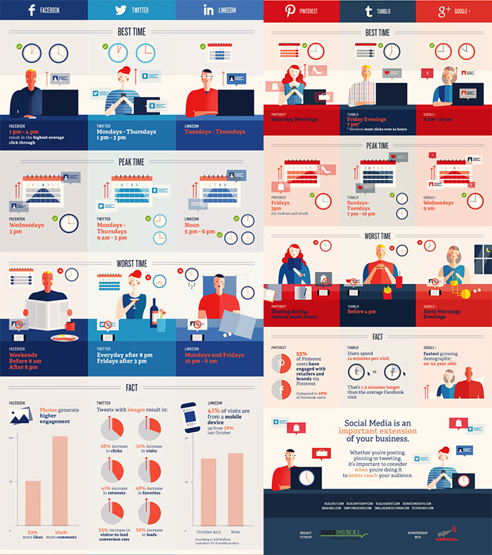

Los datos sobre cuándo publicar en redes sociales se van modificando según el comportamiento de los usuarios, la época del año, el día de la semana y la evolución de nuestra relación con las redes.
Según los últimos sondeos sobre el comportamiento de usuarios con Facebook, Twitter, Pinterest, Google Plus, Linkedin o Tumblr, estos serían los momentos del día ideales para publicar en cada una de estas redes sociales:
- Facebook.
Publicar después de la hora de comida en facebook es más efectivo. Entre las 13 a 16 nos entretenemos mirando nuestro muro, por lo tanto es perfecto para publicar, tener más visitas y clics en las publicaciones. El mejor día de la semana sigue siendo el miércoles pero la hora se retrasa hasta las 15 de la tarde.
- Twiiter
El espacio de tiempo para publicar sería de lunes a jueves de 13 a 15. Sin embargo se pueden detectar picos de usuarios de 9 a 15. No se aconseja publicar tuits a partir del viernes por la tarde ni fines de semana.
- Google+
- Tumblr
Pinterest es más de fin de semana. Lo usuarios de esta red social aumentan el tiempo que permanecen conectados los sábados y domingos.
Para un eficiente uso de Google Plus se aconseja realizar publicaciones de 9 a 10 de la mañana y el pico más alto lo encontramos en las 9 de la mañana de los miércoles.
Tu perfil y publicaciones tendrán más visualizaciones los martes y los jueves de 17 a 18 de la tarde
Tumblr tiene un perfil totalmente distinto y más nocturno. Si quieres tener efectividad en tus publicaciones deberás hacerlas de 19 a 22.

Hay que tener en cuenta que el uso de las redes sociales evoluciona muy rápido y que estas cifras pueden varias dependiendo de los eventos que ocurran a nivel mundial o a nivel local.